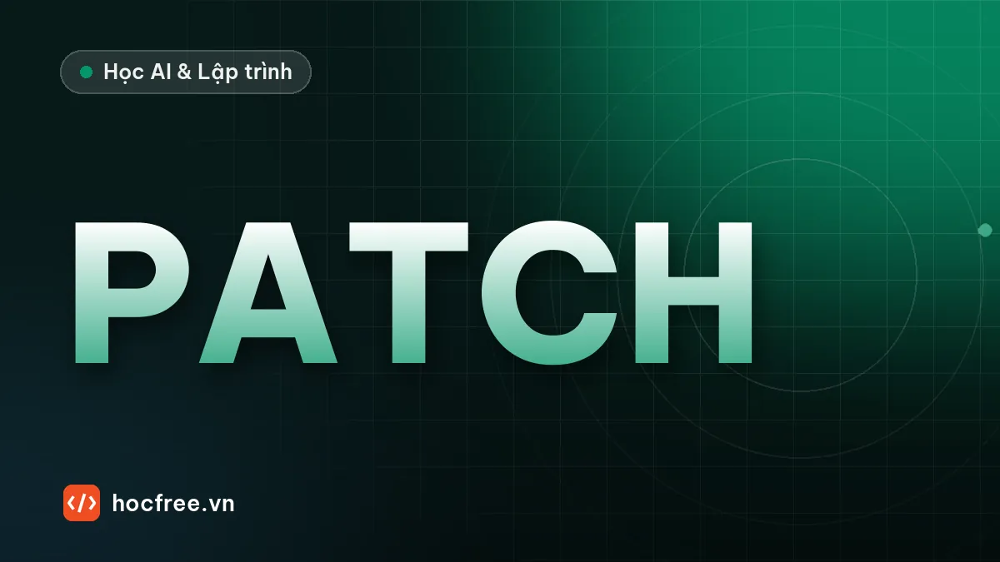

Dự án FastAPI: API quản lý công việc có đăng nhập và test
Dự án backend hoàn chỉnh: API quản lý công việc với FastAPI, SQLAlchemy, JWT, lọc, phân trang, phân quyền và bộ test pytest.

Học xong bài này, bạn sẽ
- Thiết kế CSDL và endpoint từ yêu cầu
- Ghép CRUD, xác thực, phân quyền, lọc và phân trang
- Có bộ test và tài liệu chạy dự án
Nên học trước: Kiểm thử API FastAPI với pytest
Nội dung bài viết
Dự án cuối chặng 9 là một backend hoàn chỉnh đủ để đưa vào portfolio: API quản lý công việc cho nhóm nhỏ, có tài khoản, giao việc, phân quyền theo vai trò, lọc, sắp xếp, thống kê và bộ test tự động. Bạn đã có mọi viên gạch từ các bài trước; bài này tập trung vào việc ghép chúng theo một đặc tả và tổ chức code khi ứng dụng lớn dần, với APIRouter.
1. Đặc tả
Bảng endpoint đã thiết kế ở bài tập của bài HTTP và REST. Các quy tắc nghiệp vụ:
- Công việc có tiêu đề, mô tả, trạng thái (
moi,dang_lam,xong), ưu tiên 1–3 (1 là cao nhất), hạn (tùy chọn), người tạo, người nhận (tùy chọn). - Một người chỉ thấy công việc mình tạo hoặc được giao cho mình; công việc khác trả 404.
- Người tạo sửa được mọi trường, giao hoặc bỏ giao việc, xóa. Người nhận chỉ đổi được trạng thái; sửa trường khác hay xóa trả 403.
- Danh sách lọc theo trạng thái, "việc giao cho tôi", "quá hạn" (hạn đã qua và chưa xong); sắp theo hạn gần nhất trước, việc không có hạn xếp cuối, rồi theo ưu tiên.
- Thống kê số công việc theo từng trạng thái, kể cả trạng thái có 0 việc.
2. Cấu trúc dự án
quan-ly-cong-viec/
├── pyproject.toml
├── app/
│ ├── database.py giữ nguyên bài FastAPI + CSDL (đổi tên file CSDL)
│ ├── security.py giữ nguyên bài xác thực
│ ├── auth.py giữ nguyên bài xác thực
│ ├── models.py NguoiDung, CongViec, TrangThai
│ ├── schemas.py
│ ├── main.py tạo app, gắn router
│ └── routers/
│ ├── __init__.py
│ ├── tai_khoan.py /auth/..., /nguoi-dung/toi
│ └── cong_viec.py /cong-viec/...
└── tests/
├── conftest.py như bài kiểm thử API, thêm người dùng thứ ba "chi"
└── test_cong_viec.pyBa file database.py, security.py, auth.py dùng lại nguyên vẹn: đó là phần thưởng của việc tách module ngay từ đầu. Router tai_khoan.py chứa đúng ba endpoint tài khoản của bài xác thực, chỉ đổi @app thành @router.
3. Model và schema
# (minh họa) app/models.py
"""Bảng người dùng và công việc."""
import enum
from datetime import date, datetime
from sqlalchemy import ForeignKey, String, func
from sqlalchemy.orm import Mapped, mapped_column, relationship
from app.database import Base
class TrangThai(enum.StrEnum):
MOI = "moi"
DANG_LAM = "dang_lam"
XONG = "xong"
class NguoiDung(Base):
__tablename__ = "nguoi_dung"
id: Mapped[int] = mapped_column(primary_key=True)
ten_dang_nhap: Mapped[str] = mapped_column(String(50), unique=True)
mat_khau_bam: Mapped[str]
class CongViec(Base):
__tablename__ = "cong_viec"
id: Mapped[int] = mapped_column(primary_key=True)
tieu_de: Mapped[str] = mapped_column(String(200))
mo_ta: Mapped[str] = mapped_column(default="")
trang_thai: Mapped[TrangThai] = mapped_column(default=TrangThai.MOI, index=True)
uu_tien: Mapped[int] = mapped_column(default=2) # 1 cao, 2 vừa, 3 thấp
han: Mapped[date | None]
nguoi_tao_id: Mapped[int] = mapped_column(ForeignKey("nguoi_dung.id"), index=True)
nguoi_nhan_id: Mapped[int | None] = mapped_column(ForeignKey("nguoi_dung.id"), index=True)
tao_luc: Mapped[datetime] = mapped_column(server_default=func.now())
nguoi_tao: Mapped[NguoiDung] = relationship(foreign_keys=[nguoi_tao_id], lazy="joined")
nguoi_nhan: Mapped[NguoiDung | None] = relationship(foreign_keys=[nguoi_nhan_id], lazy="joined")TrangThailàStrEnum(Python 3.11+): SQLAlchemy lưu nó thành cột chuỗi chỉ nhận đúng các giá trị khai báo, Pydantic kiểm tra giá trị vào, và/docshiện danh sách lựa chọn.- Bảng
cong_vieccó hai khóa ngoại tớinguoi_dung, nên mỗirelationshipphải chỉ rõforeign_keys, nếu không SQLAlchemy không biết nối theo cột nào. lazy="joined"nạp sẵn người tạo, người nhận bằng JOIN trong cùng câu truy vấn: tránh bài toán N+1 (chặng 8) khi liệt kê 100 công việc.
# (minh họa) app/schemas.py
"""Dữ liệu vào và ra của API."""
from datetime import date, datetime
from pydantic import BaseModel, ConfigDict, Field, field_validator
from app.models import TrangThai
class NguoiDungTao(BaseModel):
ten_dang_nhap: str = Field(min_length=3, max_length=50, pattern=r"^[a-z0-9_]+$")
mat_khau: str = Field(min_length=8, max_length=128)
class NguoiDungDoc(BaseModel):
model_config = ConfigDict(from_attributes=True)
id: int
ten_dang_nhap: str
class Token(BaseModel):
access_token: str
token_type: str = "bearer"
class CongViecTao(BaseModel):
tieu_de: str = Field(min_length=1, max_length=200)
mo_ta: str = ""
uu_tien: int = Field(default=2, ge=1, le=3)
han: date | None = None
nguoi_nhan: str | None = None # tên đăng nhập người được giao
class CongViecCapNhat(BaseModel):
tieu_de: str | None = Field(default=None, min_length=1, max_length=200)
mo_ta: str | None = None
trang_thai: TrangThai | None = None
uu_tien: int | None = Field(default=None, ge=1, le=3)
han: date | None = None # gửi null để bỏ hạn
nguoi_nhan: str | None = None # gửi null để bỏ giao việc
@field_validator("tieu_de", "mo_ta", "trang_thai", "uu_tien")
@classmethod
def khong_nhan_null(cls, gia_tri: object) -> object:
if gia_tri is None:
raise ValueError("trường này không được là null")
return gia_tri
class CongViecDoc(BaseModel):
model_config = ConfigDict(from_attributes=True)
id: int
tieu_de: str
mo_ta: str
trang_thai: TrangThai
uu_tien: int
han: date | None
nguoi_tao: NguoiDungDoc
nguoi_nhan: NguoiDungDoc | None
tao_luc: datetimeClient giao việc bằng tên đăng nhập (nguoi_nhan: "binh"), không phải id nội bộ; API trả về đối tượng lồng NguoiDungDoc. Trong CongViecCapNhat, han và nguoi_nhan được phép là null (nghĩa là "bỏ hạn", "bỏ giao việc") nên không nằm trong validator chặn null; các trường còn lại thì không.
4. Router công việc
# (minh họa) app/routers/cong_viec.py
"""Công việc: người tạo toàn quyền; người nhận chỉ đổi trạng thái; người khác không thấy."""
from datetime import date
from typing import Annotated
from fastapi import APIRouter, HTTPException, Query, status
from sqlalchemy import func, or_, select
from app.auth import NguoiDungHienTai
from app.database import SessionDep
from app.models import CongViec, NguoiDung, TrangThai
from app.schemas import CongViecCapNhat, CongViecDoc, CongViecTao
router = APIRouter(prefix="/cong-viec", tags=["Công việc"])
def cua_toi(nguoi_dung: NguoiDung):
"""Điều kiện SQL: công việc tôi tạo hoặc được giao cho tôi."""
return or_(CongViec.nguoi_tao_id == nguoi_dung.id, CongViec.nguoi_nhan_id == nguoi_dung.id)
def tim_nguoi_nhan(session: SessionDep, ten: str | None) -> NguoiDung | None:
if ten is None:
return None
nd = session.scalar(select(NguoiDung).where(NguoiDung.ten_dang_nhap == ten))
if nd is None:
raise HTTPException(status_code=422, detail=f"Không có người dùng '{ten}'")
return nd
def lay_hoac_404(session: SessionDep, cv_id: int, nguoi_dung: NguoiDung) -> CongViec:
cv = session.scalar(select(CongViec).where(CongViec.id == cv_id, cua_toi(nguoi_dung)))
if cv is None:
raise HTTPException(status_code=404, detail="Không tìm thấy công việc")
return cv
@router.post("", status_code=status.HTTP_201_CREATED)
def tao(du_lieu: CongViecTao, session: SessionDep, nguoi_dung: NguoiDungHienTai) -> CongViecDoc:
cv = CongViec(
**du_lieu.model_dump(exclude={"nguoi_nhan"}),
nguoi_tao=nguoi_dung,
nguoi_nhan=tim_nguoi_nhan(session, du_lieu.nguoi_nhan),
)
session.add(cv)
session.commit()
session.refresh(cv)
return CongViecDoc.model_validate(cv)
@router.get("")
def liet_ke(
session: SessionDep,
nguoi_dung: NguoiDungHienTai,
trang_thai: TrangThai | None = None,
toi_nhan: bool = False,
qua_han: bool = False,
skip: Annotated[int, Query(ge=0)] = 0,
limit: Annotated[int, Query(ge=1, le=100)] = 20,
) -> list[CongViecDoc]:
q = select(CongViec).where(cua_toi(nguoi_dung))
if trang_thai is not None:
q = q.where(CongViec.trang_thai == trang_thai)
if toi_nhan:
q = q.where(CongViec.nguoi_nhan_id == nguoi_dung.id)
if qua_han:
q = q.where(CongViec.han < date.today(), CongViec.trang_thai != TrangThai.XONG)
q = q.order_by(CongViec.han.is_(None), CongViec.han, CongViec.uu_tien, CongViec.id)
return [CongViecDoc.model_validate(cv) for cv in session.scalars(q.offset(skip).limit(limit))]
@router.get("/thong-ke")
def thong_ke(session: SessionDep, nguoi_dung: NguoiDungHienTai) -> dict[str, int]:
dem = {tt.value: 0 for tt in TrangThai}
q = (
select(CongViec.trang_thai, func.count())
.where(cua_toi(nguoi_dung))
.group_by(CongViec.trang_thai)
)
for tt, so in session.execute(q):
dem[tt.value] = so
return dem
@router.get("/{cv_id}")
def xem(cv_id: int, session: SessionDep, nguoi_dung: NguoiDungHienTai) -> CongViecDoc:
return CongViecDoc.model_validate(lay_hoac_404(session, cv_id, nguoi_dung))
@router.patch("/{cv_id}")
def cap_nhat(
cv_id: int, du_lieu: CongViecCapNhat, session: SessionDep, nguoi_dung: NguoiDungHienTai
) -> CongViecDoc:
cv = lay_hoac_404(session, cv_id, nguoi_dung)
thay_doi = du_lieu.model_dump(exclude_unset=True)
if cv.nguoi_tao_id != nguoi_dung.id and set(thay_doi) - {"trang_thai"}:
raise HTTPException(status_code=403, detail="Người được giao chỉ được đổi trạng thái")
if "nguoi_nhan" in thay_doi:
cv.nguoi_nhan = tim_nguoi_nhan(session, thay_doi.pop("nguoi_nhan"))
for truong, gia_tri in thay_doi.items():
setattr(cv, truong, gia_tri)
session.commit()
session.refresh(cv)
return CongViecDoc.model_validate(cv)
@router.delete("/{cv_id}", status_code=status.HTTP_204_NO_CONTENT)
def xoa(cv_id: int, session: SessionDep, nguoi_dung: NguoiDungHienTai) -> None:
cv = lay_hoac_404(session, cv_id, nguoi_dung)
if cv.nguoi_tao_id != nguoi_dung.id:
raise HTTPException(status_code=403, detail="Chỉ người tạo được xóa công việc")
session.delete(cv)
session.commit()# (minh họa) app/main.py
"""API quản lý công việc nhóm."""
from collections.abc import AsyncIterator
from contextlib import asynccontextmanager
from fastapi import FastAPI
from app.database import Base, engine
from app.routers import cong_viec, tai_khoan
@asynccontextmanager
async def lifespan(app: FastAPI) -> AsyncIterator[None]:
Base.metadata.create_all(engine)
yield
app = FastAPI(title="Quản lý công việc", version="1.0.0", lifespan=lifespan)
app.include_router(tai_khoan.router)
app.include_router(cong_viec.router)
@app.get("/suc-khoe", tags=["Hệ thống"])
def suc_khoe() -> dict[str, str]:
"""Dùng cho công cụ giám sát và Docker kiểm tra ứng dụng còn sống."""
return {"trang_thai": "ok"}APIRouter(prefix="/cong-viec", tags=[...])gom các endpoint cùng nhóm;app.include_routergắn vào ứng dụng.tagschia nhóm trên/docs.cua_toi()trả về một điều kiện SQL dùng lại ở mọi truy vấn: quy tắc "chỉ thấy việc của mình" nằm ở đúng một chỗ, không thể quên ở endpoint nào.- Phân quyền trong
cap_nhat:set(thay_doi) - {"trang_thai"}là tập các trường khác trạng thái mà client muốn đổi; người nhận gửi bất kỳ trường nào trong đó là 403. - Phân biệt 404 và 403: người không liên quan nhận 404 (không lộ công việc tồn tại); người nhận thấy công việc nhưng không đủ quyền thì 403.
/thong-kekhai báo trước/{cv_id}: FastAPI so khớp đường dẫn theo thứ tự khai báo, đặt sau thì"thong-ke"bị hiểu làcv_idvà trả 422.- Sắp xếp
CongViec.han.is_(None)trước: giá trịFalse(có hạn) đứng trướcTrue(không hạn), cách viết chạy được trên cả SQLite lẫn PostgreSQL. /suc-khoelà endpoint "health check" mà Docker, máy chủ cân bằng tải và công cụ giám sát gọi định kỳ (chặng 10).
5. Bộ test nghiệm thu
# (minh họa) tests/test_cong_viec.py
from datetime import date, timedelta
import pytest
def tao(client, headers, **du_lieu):
r = client.post("/cong-viec", json={"tieu_de": "Việc", **du_lieu}, headers=headers)
assert r.status_code == 201, r.text
return r.json()
def test_tao_va_giao_viec(client, an, binh):
cv = tao(client, an, tieu_de="Viết báo cáo", nguoi_nhan="binh", han="2026-11-05")
assert cv["trang_thai"] == "moi" and cv["uu_tien"] == 2
assert cv["nguoi_tao"]["ten_dang_nhap"] == "an_nguyen"
assert cv["nguoi_nhan"]["ten_dang_nhap"] == "binh"
def test_giao_cho_nguoi_khong_ton_tai(client, an):
r = client.post("/cong-viec", json={"tieu_de": "X", "nguoi_nhan": "ma"}, headers=an)
assert r.status_code == 422
@pytest.mark.parametrize(
"body", [{"tieu_de": ""}, {"tieu_de": "A", "uu_tien": 5}, {"tieu_de": "A", "han": "31/12/2026"}]
)
def test_du_lieu_sai(client, an, body):
assert client.post("/cong-viec", json=body, headers=an).status_code == 422
def test_ai_thay_viec_nao(client, an, binh, chi):
cv = tao(client, an, nguoi_nhan="binh")
assert client.get(f"/cong-viec/{cv['id']}", headers=binh).status_code == 200
assert client.get(f"/cong-viec/{cv['id']}", headers=chi).status_code == 404
assert client.get("/cong-viec", headers=chi).json() == []
def test_nguoi_nhan_chi_doi_trang_thai(client, an, binh):
cv = tao(client, an, nguoi_nhan="binh")
url = f"/cong-viec/{cv['id']}"
r = client.patch(url, json={"trang_thai": "dang_lam"}, headers=binh)
assert r.status_code == 200 and r.json()["trang_thai"] == "dang_lam"
assert client.patch(url, json={"tieu_de": "Đổi tên"}, headers=binh).status_code == 403
assert client.delete(url, headers=binh).status_code == 403
assert client.delete(url, headers=an).status_code == 204
def test_nguoi_tao_sua_va_bo_giao(client, an, binh):
cv = tao(client, an, nguoi_nhan="binh", han="2026-11-05")
r = client.patch(
f"/cong-viec/{cv['id']}", json={"nguoi_nhan": None, "han": None, "uu_tien": 1}, headers=an
)
assert r.status_code == 200
assert (r.json()["nguoi_nhan"], r.json()["han"], r.json()["uu_tien"]) == (None, None, 1)
assert client.get(f"/cong-viec/{cv['id']}", headers=binh).status_code == 404 # hết được giao
def test_khong_cho_null_trang_thai(client, an):
cv = tao(client, an)
r = client.patch(f"/cong-viec/{cv['id']}", json={"trang_thai": None}, headers=an)
assert r.status_code == 422
def ds_id(client, headers, **params):
return [cv["id"] for cv in client.get("/cong-viec", params=params, headers=headers).json()]
def test_loc_sap_xep_va_thong_ke(client, an, binh):
hom_qua = (date.today() - timedelta(days=1)).isoformat()
tuan_sau = (date.today() + timedelta(days=7)).isoformat()
a = tao(client, an, tieu_de="Không hạn")
b = tao(client, an, tieu_de="Tuần sau", han=tuan_sau, nguoi_nhan="binh")
c = tao(client, an, tieu_de="Trễ hạn", han=hom_qua)
tao(client, binh, tieu_de="Việc riêng của Bình")
client.patch(f"/cong-viec/{b['id']}", json={"trang_thai": "xong"}, headers=an)
assert ds_id(client, an) == [c["id"], b["id"], a["id"]] # hạn gần trước, không hạn cuối
assert ds_id(client, an, qua_han=True) == [c["id"]]
assert ds_id(client, an, trang_thai="xong") == [b["id"]]
assert len(ds_id(client, binh, toi_nhan=True)) == 1
thong_ke = client.get("/cong-viec/thong-ke", headers=an).json()
assert thong_ke == {"moi": 2, "dang_lam": 0, "xong": 1}
assert client.get("/cong-viec/thong-ke", headers=binh).json()["moi"] == 1
def test_suc_khoe(client):
assert client.get("/suc-khoe").json() == {"trang_thai": "ok"}$ uv run pytest -q --cov=app.routers.cong_viec --cov-report=term-missing
Name Stmts Miss Cover Missing
--------------------------------------------------------
app\routers\cong_viec.py 71 0 100%
--------------------------------------------------------
TOTAL 71 0 100%
11 passed in 2.40sTest chính là đặc tả viết bằng code: mỗi quy tắc ở mục 1 có ít nhất một test tương ứng. Test lọc dùng ngày tính từ date.today() chứ không viết cứng, để chạy đúng vào bất kỳ ngày nào. Chạy thêm uv run ruff check . và uv run mypy app: cả hai sạch là điều kiện "xong" của dự án.
uv sync, uv run fastapi dev app/main.py), cách chạy test, và ảnh chụp trang /docs. Ở chặng 10 bạn sẽ thêm Dockerfile và CI để mỗi lần đẩy code đều tự chạy test.Bài tập
Bài 1. Dựng và nghiệm thu
Dựng dự án theo cấu trúc ở mục 2, chạy toàn bộ test (11 test phải đạt), rồi dùng /docs với ba tài khoản để tự đi một vòng: An giao việc cho Bình, Bình chuyển sang dang_lam rồi xong, Chi không thấy gì.
Xem gợi ý
Nếu GET /cong-viec/thong-ke trả 422 với lỗi int_parsing ở cv_id, bạn đã khai báo /thong-ke sau /{cv_id}. Nếu SQLAlchemy báo AmbiguousForeignKeysError, kiểm tra tham số foreign_keys của hai relationship.
Bài 2. Bình luận cho công việc
Thêm bảng binh_luan (id, cong_viec_id, nguoi_viet_id, noi_dung, tao_luc) và hai endpoint POST, GET /cong-viec/{cv_id}/binh-luan. Chỉ người thấy được công việc mới đọc, viết bình luận. Viết test trước.
Xem gợi ý
Dùng lại lay_hoac_404(session, cv_id, nguoi_dung) ở đầu cả hai endpoint: nó vừa kiểm tra công việc tồn tại vừa kiểm tra quyền xem, nên quy tắc phân quyền tự động đúng. Trong model CongViec thêm binh_luan: Mapped[list["BinhLuan"]] = relationship(cascade="all, delete-orphan") để xóa công việc thì bình luận bị xóa theo. Test tối thiểu: người nhận bình luận được (201), Chi nhận 404, nội dung rỗng nhận 422, danh sách trả theo thứ tự thời gian.
Nguồn tham khảo: FastAPI: Bigger Applications - Multiple Files; SQLAlchemy: Handling Multiple Join Paths; enum.StrEnum.
Bài tập thực hành
- Hoàn thiện API theo đặc tả trong bài, toàn bộ test trong bài phải đạt.
- Thêm bình luận cho công việc: POST và GET /cong-viec/{id}/binh-luan, kèm test phân quyền.
Làm xong bài tập mới chuyển sang bài tiếp theo: tự viết code là cách duy nhất để nhớ lâu.